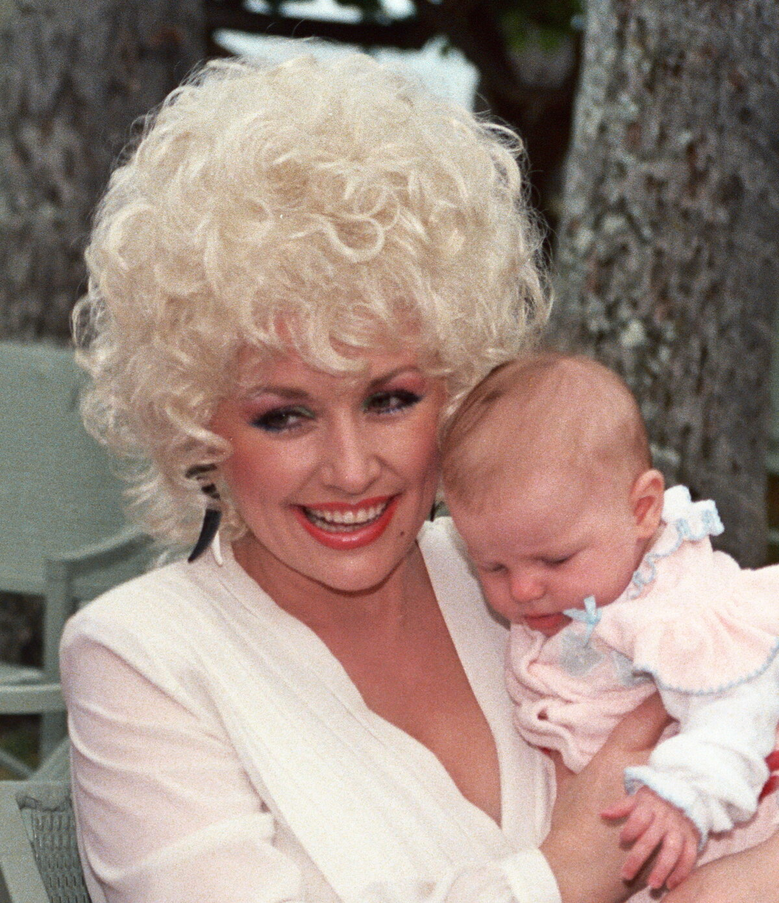

Dolly Parton's first hit was a song called Dumb Blonde, back in 1967.
Now, after her death on August 25, 2026, her whole catalog is surging again.
That surge is sending listeners all the way back to where her chart run first began.

Table of Contents
How Dumb Blonde Became Her First Hit
Nashville songwriter Curly Putman wrote it, one of the few early hits Parton didn't write herself.
Monument Records released it as a single in 1966.
The song, Dumb Blonde, entered the Billboard Hot Country Songs chart at number 64 on January 21, 1967.
It climbed to number 24 by March 18, its ninth week on the chart.
It was her first single ever to chart, and it landed on her 1967 debut album, Hello, I'm Dolly.
A Title She Spent a Career Undoing
The lyrics push back against the title's stereotype, a joke Parton controlled on her own terms from the start.
ABC News borrowed a line straight from the song for its obituary headline on August 26, 2026: "this dumb blonde ain't nobody's fool."
Joining The Porter Wagoner Show
Parton's chart debut caught the attention of Porter Wagoner, host of a nationally syndicated country show.
In August 1967, his longtime "girl singer" Norma Jean announced she was leaving.
Wagoner asked Parton to take her place on both the television show and his touring band.
She made her first appearance on The Porter Wagoner Show on September 5, 1967.
The pair played their first concert together on September 14, 1967, in Lebanon, Virginia.
A Rocky Start With Wagoner's Audience
Crowds at those early shows sometimes chanted for Norma Jean instead of Parton.
She stayed anyway, appearing alongside Wagoner in 218 episodes over the next seven years.
She left to go solo in 1974.
Why Her Catalog Is Surging Now
Parton died on August 25, 2026, at the Vanderbilt-Ingram Cancer Center in Nashville after a brief cancer battle.
Her US catalog streams rose 1,143 percent week over week in the days that followed, according to Billboard.
On August 26, she briefly became the world's most-streamed artist, with 79.7 million global streams in a single day.
Fans gathering outside her Tennessee home have driven much of that wave online, tribute clips like this one racking up views on TikTok.
Streams of Jolene and 9 to 5 have both climbed sharply since her death.
Her original recording of I Will Always Love You entered a chart for the first time in its history, at number 27.
FAQ
What was Dolly Parton's first hit song?
Dumb Blonde, a Curly Putman song that reached number 24 on the Billboard Hot Country Songs chart in March 1967, her first single ever to chart.
How did Dolly Parton join The Porter Wagoner Show?
Porter Wagoner asked her to replace Norma Jean, who left the show in August 1967.
Parton's first appearance aired September 5, 1967.
Why are Dolly Parton's streams surging in 2026?
Her US catalog streams rose 1,143 percent week over week after her death on August 25, 2026.
She briefly became the world's most-streamed artist the next day.
What album was her first hit song on?
Parton's 1967 debut album, Hello, I'm Dolly.
How long did Dolly Parton perform with Porter Wagoner?
Seven years and 218 episodes, from 1967 until she left his show to go solo in 1974.
This one joins the rest of the Trending section, where 1960s music keeps resurfacing in 2026.
It also connects to the site's 1960s country music hub, home to the Nashville Sound era her career grew out of, and the 1960s trivia game for more of the decade.
Back to the 1960smusic.net homepage to explore more of the era that gave Dolly Parton her start with Dumb Blonde.